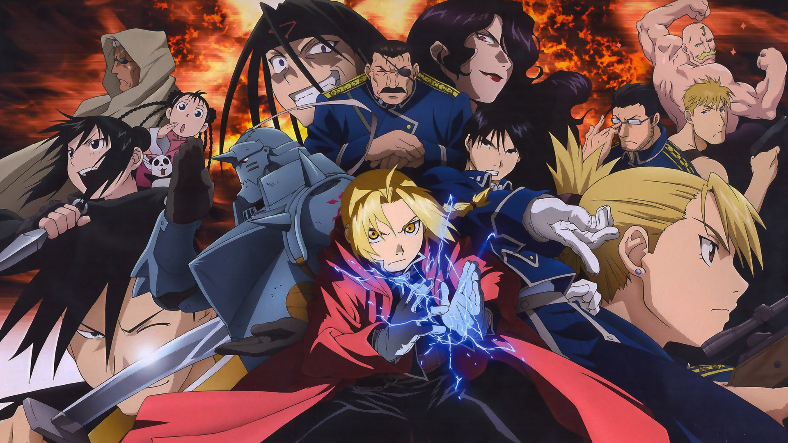

Fullmetal Alchemist é um anime baseado no mangá criado por Hiromu Arakawa. A história acompanha os irmãos Edward e Alphonse Elric, dois jovens alquimistas que tentam recuperar seus corpos após uma tentativa fracassada de ressuscitar sua mãe com alquimia. O anime mistura ação, drama, temas filosóficos e reflexões sobre sacrifício, culpa e redenção.
A trama se passa em um mundo fictício onde a alquimia é uma ciência avançada. Após a tentativa de transmutação humana, Edward perde seu braço e sua perna, enquanto Alphonse perde seu corpo inteiro, tendo sua alma presa a uma armadura. Para restaurarem seus corpos, eles partem em busca da lendária Pedra Filosofal, enfrentando diversos inimigos, mistérios do governo e dilemas morais ao longo do caminho.